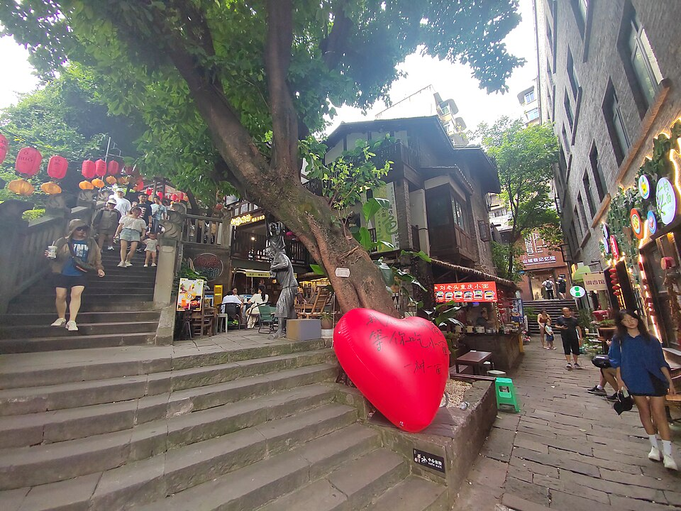
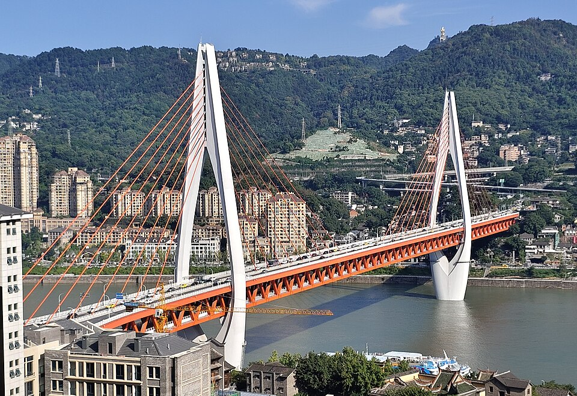
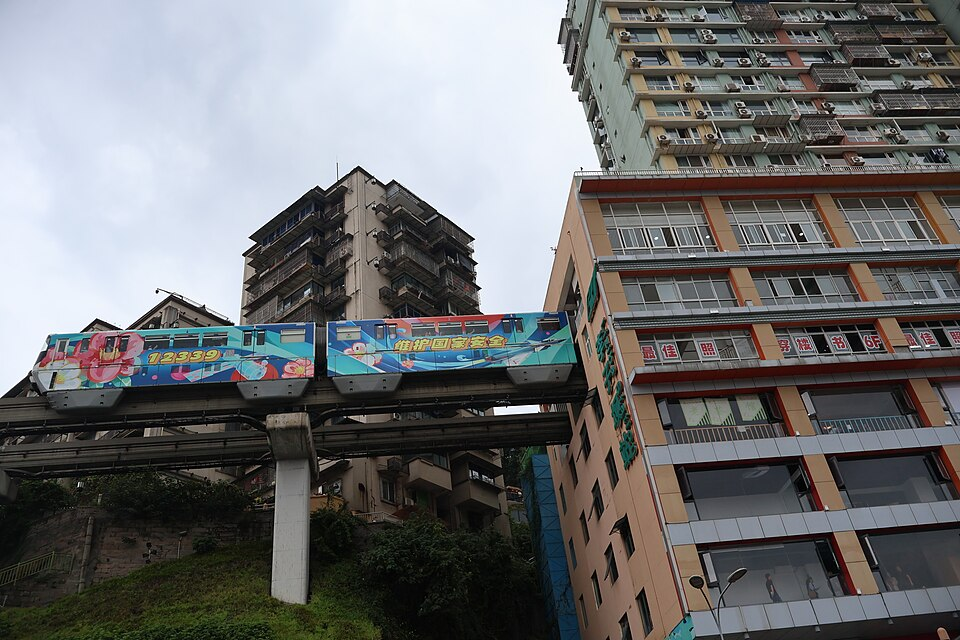
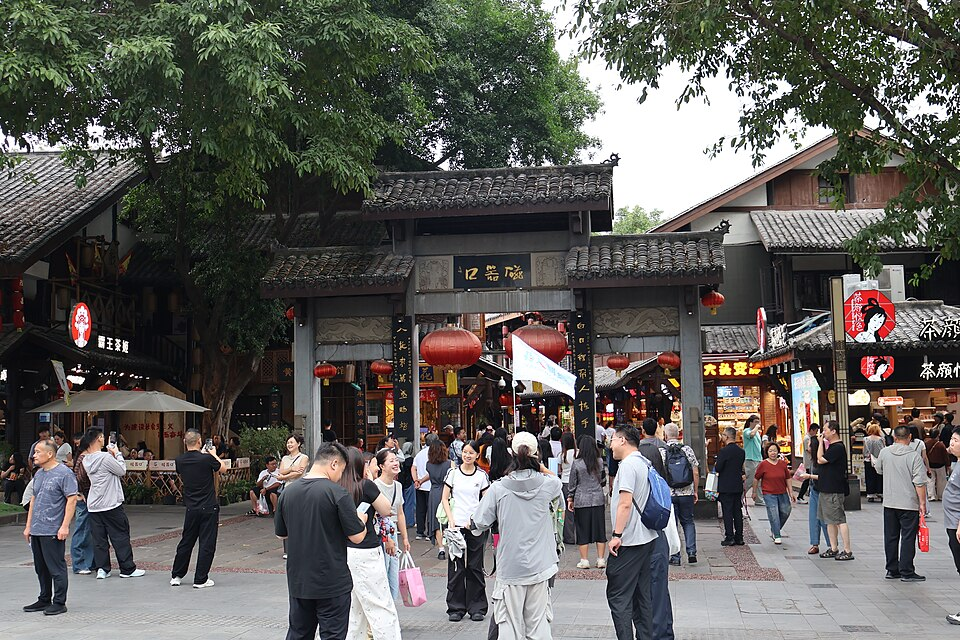
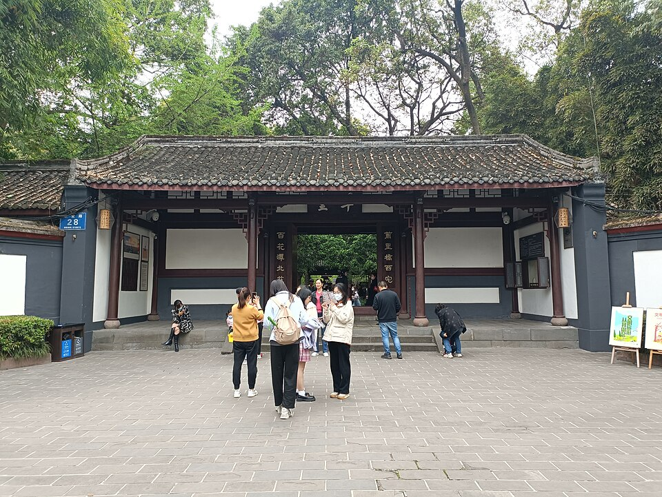
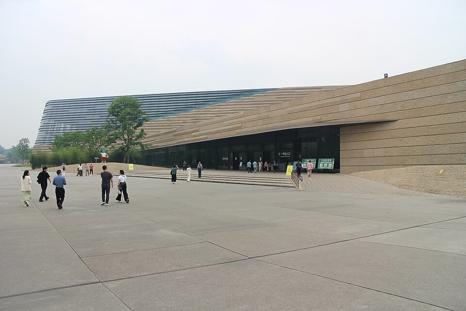
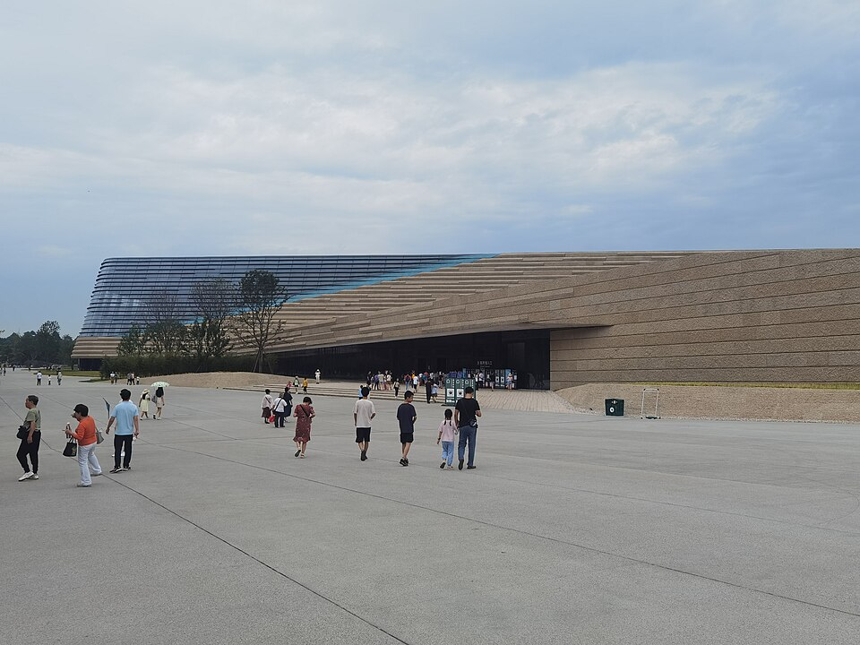

Day 1｜12月8日（二）
台北 → 重慶（晚班，落地後直接入住）
起飛前約 2 小時到機場。託運行李 1 件 23 kg（國航 CA410）；報到櫃檯開放時間未查到，出發前看航空公司通知。
CA410 桃園 T2 19:25 → 重慶江北 T3 23:00，3 小時 35 分。
導遊型交通指引：
- 23:00 落地後先開網路：行動數據選 eSIM、打開「數據漫遊」（叫滴滴要用）。入境、領行李的時間未查到（估算至少 23:40 才出得來）。地鐵 10 號線末班約 22:30～23:00，搭不到。
- T3 的網約車在抵達廳對面的地下專屬停車區上車（wanderinchina）。
- 機場 → 飯店（渝中區青年路 66 號）：高德計程車約 ¥71、約 44 分（2026-11-25 週三 19:12 查）；機場 → 解放碑開車約 43～46 分（30.9～35.5 km，11-20 週五 21:47 查）；wanderinchina 寫 40～60 分（視交通）。
- 車資兩說：舊指南計程車約 ¥50、30 分；2026 指南計程車 ¥60～120（深夜另加）、滴滴 ¥70～110；自己用去哪兒夜間費率估約 ¥69（估算）。高德估計程車約 ¥73：週五傍晚尖峰約 1 小時 13 分、週五 21:47 約 44 分（2026-11-20 查、起點是機場範圍中心）。
- 備案：機場快線 K01 ¥15 到解放碑（國泰廣場），運行至末班航班到達後 30 分；官方時刻未查到，要現場確認。
23:40 出來，車程約 44 分（高德晚上 21:47 查），預計約 00:25～00:45 入住（估算）；若像高德傍晚尖峰估的 73 分，約 00:55 才到。飯店櫃檯 24 小時。
約 00:30～00:45 入住（跨日，時間為估算；路況差最晚約 00:55）。12/8～11 住 3 晚（Booking 預訂）。渝中區青年路 66 號，解放碑旁；臨江門站步行約 260 m、較場口站約 350 m（攜程）。五星；免費健身室、恆溫泳池、免費行李寄存（攜程設施）；攜程 4.7（5,149 則，2026/11 查）。櫃檯 24 小時；退房時間未查到，看訂房訊息。
📍 今日相關地圖
Day 2｜12月9日（三）
渝中老街與階梯：解放碑 → 十八梯 → 山城巷 → 湖廣會館 → 戴家巷 → 洪崖洞（日落 17:55）
導遊型交通指引：
- 從飯店步行約 17 分（高德 808 m，含坡；08:50 出發約 09:07 到）。


傳統風貌區，渝中區中興路 1 號，較場口站有十八梯出口，出來就在上方（兩篇遊記）。全年全天開放、免費（攜程）；晚上亮燈較好看（遊記）。遊記建議 2～3 小時含爬坡（年份不明），這裡排約 1.5 小時（09:15～10:45），厚慈街出來往山城巷要往上走（研判）。
來源：攜程十八梯（二手）。

十八梯（厚慈街）→ 山城巷上端（領事巷）步行約 22 分（高德 988 m，含上坡；10:45 出發約 11:07 到，山城巷少逛幾分鐘，11:50 照樣出來）。渝中南紀門，中興路至領事巷，幾乎全為梯步；攜程標全年全天開放，整條巷免費未查到明文；建議停留未查到。
來源：攜程山城巷（二手）。
導遊型交通指引：
- 方案 A 尘香（解放碑新華路）：山城巷中興路出口 → 尘香步行約 22 分（高德 1.1 km，含坡），11:50 出發約 12:12 到。午餐後尘香 → 湖廣會館步行約 31 分（高德 1.6 km），12:58 前出發才能 13:30 到；不想走可叫車（高德估約 ¥17）。
- 方案 B 饭江湖（湖廣會館旁）：山城巷中興路出口 → 饭江湖步行約 40 分（高德 2.3 km），約 12:30 到；→ 湖廣會館約 45 分（高德 2.5 km）。


湖廣會館：09:00–18:00，17:00 停止售票入園（攜程）；地址渝中區長濱路芭蕉園1號。成人票 ¥32（大河票務 2025-07、攜程 2026/11）。東水門大橋免費（推論）。遊記寫約 2 小時（單一來源），這裡只排 90 分（館內約 70 分，最後上東水門大橋看全景）。
來源：攜程湖廣會館（摘要）。
攜程轉載景區公告：12/7（一）至 12/21（一）全天停運年度修理，預計 12/22 恢復；第二來源未查到，出發前打景區電話 023-68816888 或看公眾號確認。本行程不排索道。
導遊型交通指引：
- 東水門大橋北橋頭 → 小什字步行約 8 分（高德 483 m）。
- 小什字 → 飯店步行約 22 分（高德 1.2 km），約 15:32 到飯店。
從飯店步行約 12 分（高德 701 m）。全長約 750 m、高差約 60 m 的 Z 字形崖壁步道，24 小時開放、免費（遊記兩篇）。從上端臨江路的戴家巷口進，日落前到中段吊腳樓觀景台，再往東上臨江支路接晚餐（東側出口是研判，走不通就原路回老街）。日落 17:55，民用暮光結束 18:21（api.sunrise-sunset.org）。

主體免費。燈飾 19:30–23:00 是 2026-04-15 起的資料（洪崖洞公眾號，光明網轉述），12 月時間未查到；22:30 停止入場為二手未證實；有承載量管控。12 月重慶偏陰多雲（5 年 12 月雲量 7～8 成，模型資料），夜景眺望不保證。
來源：光明網 2026-04-12（摘要）。
📍 今日相關地圖
Day 3｜12月10日（四）
往西：兩路口 → 鵝嶺 → 李子壩 → 磁器口（日落 17:55）
導遊型交通指引：
- 從飯店走到較場口站 1 號口進站（攜程寫飯店離較場口站約 350 m）。
- 搭 1 號線往璧山方向 2 站（七星崗、兩路口），¥2（高德）。隨到隨搭，班距未查到。
- 兩路口站 → 高胖妹小面步行約 4 分（高德 246 m）。高德門到門約 31 分（步行合計約 1 km），08:10 出發約 08:41 到店。計程車約 ¥12、約 13 分（高德 2026-11-25 週三晚上查）。
高胖妹 → 扶梯上端步行約 3～11 分（OSRM 271 m；高德 590 m、11 分，扶梯上端在地下，兩邊算到的入口可能不同）；從上端搭下到菜園壩、再搭上來，回兩路口站 3／4 號口（出口兩說）。全長 112 m、單程約 2 分 30 秒（澎湃 2022-05）。票價兩說：¥2／趟（2026 英文指南兩篇）、免費（一篇）；官方現價未查到。付款：一篇寫乘車碼或現金（單一來源），備零錢。營業時間：官方日常 8:00–20:00（交通開投，華龍網 2026-09-23，原文核對）；另有 06:45–22:00、06:10–22:30 兩說。預算不計。
導遊型交通指引：
- 扶梯路線 09:35 結束時已在兩路口站 4 號口，不用另外走到站；站內走到月台的時間未查到。
- 1 號線往璧山方向 1 站到鵝嶺，約 3 分（估算）、¥2（高德）。
- 鵝嶺站 1 號口出，佛圖關公園南門（棧橋入口旁）約 100 m（去哪兒點評，舊）；約 09:50 到。高德的門到門 29 分是算到鵝嶺公園，不是這個入口。
- 09:55 開始要先排隊、到遊客服務點用台胞證預約，時間很緊；晚了就把扶梯縮成只搭一趟下去。
抵達先在入口排隊、現場掃碼登記（台胞證要到遊客服務點預約），排不到就走計畫B。棧橋 9:00–18:00、免費（新華網 2025-11-12，本地寶 2026-10-28）；全長 460 m。實名預約：微信公眾號「渝中公園」或小程序「鵝嶺公園」，持台胞證者要到遊客服務點預約，成功後憑 QR 進入；服務點位置與當天名額未查到。全線（棧橋＋鵝嶺公園＋二廠＋三層馬路＋李子壩）約 2.5 小時（本地寶，二手）。週一關閉（Wander in China 原文；另一篇只有摘要），12/10 是週四不受影響。出口在鵝嶺公園爬山廊旁。
出發前在「渝中公園」公眾號查台胞證的預約方式與名額。
B 計畫B｜佛圖關公園走到鵝嶺公園，再往李子壩 🎫 棧橋預約不到、或當天沒名額時


免費；停留排 20～25 分（gochinatravel 2026 寫 20～40 分，因午餐與下一段時間縮短）；列車約 3 分一班（遊記）。官方開放時段未查到。拍攝時段沒有一致結論（有說清晨或傍晚人少，有說下午 3～5 點光線柔，10:00–15:00 人最多）。出站到觀景台約 1 分（出口兩說：1 號口／B 口）。
來源：gochinatravel（二手）。
導遊型交通指引：
- 午餐店走到李子壩站約 8 分（高德 434 m），13:22 離開店、13:30 前到站。
- 2 號線往魚洞方向 2 站（佛圖關、大坪），大坪站內換乘約 3 分，換 1 號線往璧山方向 10 站到磁器口。共 12 站、¥5（高德）。
- 車上加轉乘約 38 分（高德門到門 1 小時 12 分，扣掉兩端步行 10 分、24 分，自己算），約 14:08 到磁器口站。
- 磁器口站 1 號口出，先到後街（吊腳樓廣場，離車站比古鎮中心近）；14:20 從後街開始逛。


街區免費；鐘家院暫停營業（攜程 2026/11）；寶輪寺門票兩說（無門票：本地寶 2025；約 ¥5：舊資料）。開放時間兩說：全天／10:00–20:00（去哪兒、大河票務摘要）；各店約 10:00 後營業（推論）。建議停留 3～6 小時（攜程）。遊記說 12 點後團客變多，下午會擠：日落 17:55 前先拍正街。
來源：去哪兒磁器口（二手）。
導遊型交通指引：
- 古鎮走到磁器口站約 24 分（高德，從古鎮中心 1018 m；OSRM 從店家算 965 m、12 分，不算坡、梯）。
- 1 號線往朝天門方向 14 站到較場口，免換乘、¥5；車上約 37～40 分（高德反方向扣步行約 37 分；遊記 40 分，年份不明）。
- 較場口出站走回飯店（約 350 m，攜程）。高德古鎮 → 飯店門到門約 1 小時 15 分（磁器口 1 號口進站、¥5、步行合計約 2 km），18:45 出發約 20:00 到飯店；計程車約 ¥44、約 36 分（高德 2026-11-25 週三 19:12 查；11-20 週五傍晚尖峰約 55 分）。
📍 今日相關地圖
Day 4｜12月11日（五）
重慶 → 成都（高鐵），下午入住匯航岷源酒店（成都日落 18:02）
導遊型交通指引：
- 從飯店走到較場口站 1 號口進站（約 350 m，攜程）。
- 1 號線往璧山方向 11 站到沙坪壩、¥5；沙坪壩站走到高鐵站約 7 分（高德 403 m）。高德飯店 → 沙坪壩站門到門約 53 分（步行合計約 1.2 km），08:40 出發約 09:33 到高鐵站。
- 沙坪壩地鐵站與高鐵站同一樞紐；進站過閘機的時間未查到，到站後還有約 50 分。
- 備案：計程車飯店 → 沙坪壩站約 ¥34、約 30 分（高德 2026-11-25 週三 19:12 查；解放碑出發週五傍晚尖峰約 57 分）。
G8612 沙坪壩 10:30 → 成都東 11:32（1 時 02 分），二等座 ¥164（12306，用 2026-11-27 同為週五代查；12/11 的票約 11/27 11:00 開賣，開賣後要再查一次）。用台胞證在 12306 買票，憑原件刷證走自助閘機進出站，不必取紙票（12306 官方問答）；註冊所需資料未查到。
錯過這班：沙坪壩 → 成都東每天約 17 班（11/27 查），例 G8646 10:49 → 12:09（¥156）、G8620 11:25 → 12:27、G8618 12:05 → 13:07；12/11 實際班次開賣後以 12306 為準。也可改從重慶西發車（較遠、要轉乘）。
來源：12306 實名制、12306 餘票 API（動態，不存檔）。
票價 ¥164 列入預算。
導遊型交通指引：
- 出高鐵站後走到地鐵「成都東客站」入口約 7 分（高德 346 m；出站本身的時間未查到，估算約 10 分）。
- 2 號線往犀浦方向 2 站到東大路，站內換乘約 3 分，換 8 號線往龍港方向 5 站到倪家橋。共 7 站、¥4（高德）。
- 倪家橋站走到盧記約 12 分（高德 723 m；1214 筆記從 E 口算 510 m、6 分）。高德門到門約 43 分，加出站約 12:25 到店，午餐排 12:45。
- 備案：計程車成都東 → 盧記約 ¥35、約 35 分（高德 2026-11-20 週五傍晚尖峰查；OSRM 無路況約 11 分）。
匯航岷源酒店（四川大學望江校區玉林廣場店），武侯區二環路南二段21號1棟1層；14:00 後入住、14:00 前退房，櫃檯 24 小時；早餐自助 ¥36／人 07:30–09:30（wingon，單一來源）。公司負擔、未訂。14:00 前能否寄放行李未查到，可打店家電話 +86-28-85286888。台胞證接待資格未查到。入住方式看訂房訊息（不放在公開網站）。
來源：永安旅遊（二手）。
導遊型交通指引：
- 飯店門口叫滴滴或計程車，到杜甫草堂約 ¥18、約 27 分（高德 2026-11-20 週五傍晚尖峰查；OSRM 無路況約 10 分）。
- 大眾運輸要約 50 分：K1 快速公交（人南立交東站上車，6 站，¥2）或 1 號線 → 13 號線（倪家橋 B 口，6 站，¥3）（高德）。


杜甫故居復建，茅屋、花徑、盆景園。攜程：09:00～18:00、17:00 停止售票；成人 ¥50；攜程 4.7（9,157 則，2026/11 查）。北門進（青華路 37 號）、南門出（草堂路 2 號）。官方開放時間未取得（官網網域已失效），另一說 08:30～18:30 是 2026 中秋國慶的延時，不是冬季。
官方微信服務號預約；現場可憑港澳台通行證到服務窗口購票（搜尋摘要），台胞證條款未明寫。出發前看官方公眾號。
15:00 到可以逛約 2 小時；12/11 的日落 18:02。
導遊型交通指引：
- 南門（草堂路 2 號）外上車，16:50 先叫車。杜甫草堂 → 玉林路約 ¥18、約 30 分（高德 2026-11-20 週五 17:00 前後查，含尖峰路況）。
- 地鐵：杜甫草堂站 C1 口 13 號線 → 3 號線，7 站、¥3，門到門約 52 分（高德）。
📍 今日相關地圖
Day 5｜12月12日（六）
三星堆一日（當天來回；成都日落 18:03）
導遊型交通指引：
- 飯店步行約 13 分到倪家橋站 B 口（高德 824 m）。
- 1 號線往南 2 站到火車南站換 7 號線外環 6 站到成都東客站（共 8 站、1 次轉乘、¥4）；高德門到門約 47 分。地鐵首班時間未查到。
- 更快：飯店旁人南立交東站搭 K4／K2A 快速公交到牛市口換 2 號線，¥4，門到門約 32～37 分（高德）。
- 備案：計程車飯店 → 成都東約 ¥26、約 30 分（高德 2026-11-20 週五傍晚尖峰查；OSRM 無路況約 13 分）。
- 約 08:27 到成都東，留約 35 分進站過閘機。
D1920 成都東 09:04 → 廣漢北 09:22（18 分）。錯過 → G8660 09:56 → 10:14，晚 52 分，抵館約 10:40 以後（搭計程車；13 路更晚）。12306 查的是 2026-11-28（六）代查，12/12 的票約 11/27～28 開賣，開賣後要再查；二等座 ¥18～22（多數 ¥20，單班票價筆記未逐班記）。用台胞證買票、刷證進站（同 Day 4）。
其他班次（11/28 代查，成都東 → 廣漢北）：G8690 07:21 → 07:39（最早，抵達約 07:40 可趕 08:30 開館）、G8660 09:56 → 10:14、C5688 10:27 → 10:45。C6372 08:27 → 三星堆站 08:45（C 字頭二等 ¥25）：三星堆站離遺址約 5 km，接駁未查到，不建議。
來源：12306 餘票 API（動態，不存檔）。
預算列入 ¥40。
導遊型交通指引：
- 計程車：高德開車約 18 分（8.3 km，2026-11-20 晚上查）；遊記說打車約 15 分（單一來源）；車資未查到（高德沒給廣漢的估價）。成都 → 廣漢全程計程車（約 40 km）車資與時間未查到，不建議。
- 13 路公交：官網寫全程 38 分（站數 13 與 10 兩說）。高德：上車點是「三星堆客運站（高鐵路）」，不在高鐵站門口，8 站、¥2，門到門約 58 分（含步行 1.5 km）；高鐵站門口能搭的是 16 路（17 站、¥2、門到門約 1 小時 9 分）。首末班、班距未查到。搭公車約 10:25 進館。高德沒有給廣漢的計程車估價。


先在 12/7 20:00 約館票，約到再買高鐵票（或確認車票可退）。搭計程車約 09:45 進館、搭公車約 10:25 進館（高德，13 路上車點在客運站；搭公車的話回程也要提早，見 14:30 卡）。陳列館（新館）08:30–18:00，17:00 停止入館；12/12 非延時開放期（推論）。普通票 ¥72（官網）。實名預約：官網、微信公眾號或「三星堆博物館」小程序；每晚 20:00 放 5 天後的票（二手），12/12 的票約 12/7 20:00 開放；無現場散客售票窗口，線上售罄就沒票。園內約 3.5 小時：新館約 2 小時 20 分（估算；單一地接文章寫新館 2～2.5 小時）＋修復館、綜合館，13:15 出館；老館不排（現況兩說）。
台胞證能否線上預約未查到：中文官網寫先線上預約再帶證件換票；英文官網寫外國人帶護照到遊客中心現場買，兩說矛盾（discrepancies #8）。館方電話 0838-5651526（2025 英文介紹頁，未核實）。老館 2026-04 部分維修（單一來源，待證實）。發掘現場暫未開放（官網）。
來源：三星堆博物館官網。
熱門日子會約滿；先確認台胞證預約方式。
導遊型交通指引：
- 博物館 → 廣漢北站：計程車約 16～19 分（高德開車 8.8～12.8 km；遊記約 30 分、車難叫）。公車門到門約 1 小時：16 路 16 站約 1 小時 1 分、13 路 11 站約 1 小時 10 分，都是 ¥2（高德），14:30 出發來不及，回程搭計程車。遊記說計程車難叫：14:15 就開始叫車；叫不到就改搭 D1931 16:09。
- 廣漢北 → 成都東高鐵 18～19 分（11/28 代查）。一定要搭 G2241 15:13 → 15:31，錯過搭 D1931 16:09 → 16:27（晚 56 分）；再下一班 G1833 16:56 → 17:14。末班 G3441 21:12 → 21:30（其次 D1903 20:59、G3781 20:31），時間很寬。
- 成都東 → 飯店同去程反方向（地鐵約 47 分、快速公交約 35 分、計程車約 30 分，高德去程方向的數字）。
📍 今日相關地圖
Day 6｜12月13日（日）
熊貓基地（上午）＋市區（成都日落 18:03）
導遊型交通指引：
- 飯店步行約 13 分到倪家橋站 B 口（高德 824 m）。
- 1 號線往北 1 站到省體育館，換 3 號線往北 11 站到熊貓大道（共 12 站，站序見 OSM 站表）；高德門到門約 1 小時 32 分（含 408 路）、¥7，06:25 出發約 07:57 到南門；高德把這條標「可能存在風險」（原因沒寫）。
- 較快的走法：1 號線往韋家碾方向 10 站到韋家碾，步行約 5 分到青岡北路，換 655 路 12 站到熊貓基地，¥6，門到門約 1 小時 21 分（06:25 出發約 07:46 到）。655 路班次未查到（高德）。
- 1 號線首班未查到：06:38 前後要在倪家橋站上車，出發前一晚用高德 App 確認首班；首班晚於這個時間就改搭計程車。
- 熊貓大道站 A 口出站，換 408 路擺渡車到南門（官網；wanderinchina 寫 D025，以官網為準）；首末班、班距、票價未查到（wanderinchina 摘要 ¥2），錯過或等太久就改計程車（熊貓大道站 → 南門高德開車約 20 分、約 ¥27）。
- 計程車飯店 → 基地：OSRM 20.4 km、約 27 分（無路況）；高德約 ¥56、約 56 分（2026-11-20 週五傍晚尖峰查，週日清晨應接近 OSRM）；官網：春熙路 → 基地約 ¥40、25～35 分。

11～2 月：上午票入園 8:00～12:00、下午票 12:00～16:30，17:30 開始清園（官網）。成人 ¥55；全員線上實名預約，最早提前 14 天（12/13 約 11/29 開放，推算），當日額度賣完為止；台胞證可（官網列「台湾居民来往大陆通行证」原件刷證入園）。園內觀光車 ¥30／人、當日不限次（官網，預算不計；wanderinchina 寫 ¥10，以官網為準）。
熊貓最活躍約 07:30～09:30（二手），冬季 8:00 才開園。南大門進、全程走路（不搭觀光車）：南大門 → 天鵝湖 → 6 號別墅（花花）→ 太陽產房 → 小熊貓 1、2 號活動場 → 1 號別墅 → 7 號別墅 → 南大門，步行共約 3.5 km、約 44 分（OSRM），停留時間是估算；11:15 前回到南門（趕 11:30 離開的交通）。12/13 週日，全園無公休（局部週一閉館不受影響）。
開放後就訂上午票（研判，週日）。
導遊型交通指引：
- 南門搭 408 路擺渡車回熊貓大道站。
- 3 號線往南 8 站到春熙路（動物園、昭覺寺南路、駟馬橋、李家沱、前鋒路、紅星橋、市二醫院、春熙路）。高德：南門 → 夫妻肺片（408 路＋3 號線）¥5，門到門約 59 分，約 12:30 到店（週五傍晚查，週日中午可能不同）。
- 計程車南門 → 夫妻肺片約 ¥33、約 37 分（高德 2026-11-20 週五傍晚尖峰查）。
導遊型交通指引：
- 往西步行約 27 分（高德 1.5 km），13:15 出發約 13:42 到。
- 不想走：計程車約 ¥8、約 11 分（高德 2026-11-20 傍晚查）。地鐵春熙路 D 口 2 號線 1 站、¥2，門到門約 28 分，比走路還久（高德）。
成都的城市歷史，藏品 20 餘萬件（博物館章程）。週日 09:00～17:00、16:30 停止入館（官網；到 20:30 只有週五、六）；免費、要提前預約；攜程 4.8（5,479 則，2026/11 查）。地址：青羊區小河街 1 號。這裡排約 2 小時（建議停留未查到），15:35 出館，走到小名堂約 6 分。
台胞證能不能線上預約未查到，出發前看官方公眾號。
2026 暑期公告寫週一固定閉館（冬季常規未取得）；12/13 是週日，有開。
計程車約 ¥16、約 22 分（高德 2026-11-20 週五晚上查），17:45 出發約 18:07 到飯店。地鐵：人民公園 B 口 2 號線 1 站到天府廣場，換 1 號線往南 4 站到倪家橋，¥3，門到門約 38 分。步行要 1 小時 22 分（高德 5.1 km），不建議。晚餐串串從飯店走約 26 分（借用座標），18:30 要準時就從人民公園直接叫車去玉林。選 B 已在飯店就略過。日落 18:02～18:03。
📍 今日相關地圖
Day 7｜12月14日（一）
出差（白天）；晚上武侯祠大街晚餐＋錦里古街
白天上班（上下班時間依公司安排；09:00 只是排序用）。晚上以 18:30 從飯店出發來排，下班比較晚就整段往後挪；23:00 前回飯店。
高德開車約 12～13 分（4.8～5.8 km）、打車約 ¥15，但這是深夜查的路況；18:30 下班尖峰沒有實測，抓約 25 分（深夜的約 2 倍）、約 18:55 到（估算）。選 B、C 的話請司機直接開到店（鐘水餃在武侯祠大街東頭，離 A 約 1.5 km）。地鐵走法未查到；10 號線武侯祠（錦里）站 A2 口離武侯祠博物館步行 3 分（武侯祠官網），到錦里的步行時間未查到。
高德開車約 13～14 分（6.2～6.8 km）、打車約 ¥19（深夜查的路況與價錢）；加上路邊叫車等候抓 25 分，約 21:40 到飯店（估算）。
📍 今日相關地圖
Day 8｜12月15日（二）
出差（白天）；晚上川劇變臉《芙蓉國粹》
白天上班（上下班時間依公司安排；09:00 只是排序用）。晚上 20:00 開演，最晚 18:30 要出門。
導遊型交通指引：
- 飯店步行約 13 分到倪家橋站 B 口（高德 824 m）。
- 1 號線往北 3 站到錦江賓館（倪家橋 → 省體育館 → 華西壩 → 錦江賓館），¥2，隨到隨搭（班距未查到）；高德飯店到餐廳門到門約 25 分（步行合計 1.1 km，深夜查、沒算等車）。18:43 到站、進站等車加 3 站，約 18:57 到錦江賓館（估算）。
- 出站走到岷山飯店（人民南路二段 55 號）；攜程寫餐廳離錦江賓館站 C1 口 248 m，約 19:00～19:03 到餐廳（估算）。
- 備案：計程車約 ¥12、開車約 8 分（3.4 km；深夜查，尖峰會更久）。
走到錦江賓館站（劇院到車站中心約 5 分，OSRM 421 m；最近的出口未查到），1 號線往南 3 站到倪家橋，¥2，再走約 13 分回飯店，約 21:50 到（估算）。計程車：約 ¥15、開車約 9 分（深夜查）。
📍 今日相關地圖
Day 9｜12月16日（三）
出差（白天）；晚上九眼橋晚餐＋安順廊橋夜景
白天上班（上下班時間依公司安排；09:00 只是排序用）。晚上以 18:30 從飯店出發來排，23:00 前回飯店。
高德開車約 11～12 分（4.9～5.8 km）、打車約 ¥15（深夜查）；18:30 下班尖峰沒有實測，抓約 25 分（深夜的約 2 倍，叫車等候沒算）、約 18:55 到（估算），晚到幾分就單點小吃。地鐵走法未查到。選 B 許家菜：目的地改望江路 1 號格林威治廣場；選 C THE BRIDGE：濱江東路 66 號（安順廊橋）；這兩段車程未查到。
高德開車約 10～11 分（4.2～5.2 km）、打車約 ¥14（深夜查）；加上叫車等候抓 25 分，約 21:40 到飯店（估算）。走到九眼橋的話就在九眼橋叫車（車程是從廊橋算的，九眼橋未查）。搭船（B）的話從東門碼頭叫車，時間未查。公交：九眼橋南站 92 路 7 站、¥2、門到門約 34 分（高德；末班未查到）。
📍 今日相關地圖
Day 10｜12月17日（四）
出差（白天）；晚上飯店附近吃成都火鍋
白天上班（上下班時間依公司安排；09:00 只是排序用）。晚上走路去吃火鍋。
步行約 14 分（OSRM 1.1 km，算到科院街中段；店門座標未查到）。
📍 今日相關地圖
Day 11｜12月18日（五）
出差（白天）；晚上飯店附近吃完早點休息（隔天 05:00 出發）
白天上班（上下班時間依公司安排；09:00 只是排序用）。晚上在飯店附近吃，早點回去收行李。
網約車預約，或請飯店櫃檯叫車；去天府機場 T2 約 44～50 分（高德）。
步行約 12 分（高德 755 m），航空路 3 號。選 C 王二娃是往西走約 14 分，約 18:44 到；沒有訂位，晚幾分沒關係。
原路走回飯店約 12 分（C 約 14 分）。回去先約好明天 05:00 的車（網約車預約，或請櫃檯叫車），再收行李、早點睡；明天 04:50 退房。
📍 今日相關地圖
Day 12｜12月19日（六）
成都 → 上海浦東轉機 → 台北（05:00 叫車去機場）
櫃檯 24 小時。05:00 的車要前一晚先約好（網約車預約，或請飯店叫車）。
導遊型交通指引：
- 高德：計程車約 ¥167、約 44 分；開車 43 分（60.4 km）或 50 分（68.3 km）（週二晚上查的路況，週六清晨未查）。05:00 出發約 05:45～05:50 到 T2（估算）。
- 地鐵趕不上：倪家橋往南首班 06:10，門到門約 1 小時 16 分，最早約 07:25 才到 T2（推算），比起飛晚。
東航天府機場：值機截止國內航班起飛前 40 分、國際 50 分（MU5442 適用哪個未查到，以 50 分算）；登機口起飛前 15 分（06:45）關（東航官網）。
MU5442 天府 T2 07:00 → 浦東 T1 09:50，2 小時 50 分（A320，經濟艙 T）。整張票到桃園，行李直掛。回程託運、手提額度未查到。
轉機 2 小時 20 分，行李直掛，不用自己領。浦東 T1 東航值機截止國內航班起飛前 40 分、國際 50 分（11:30／11:20），登機口起飛前 20 分（11:50）關（東航官網）；以 11:20 前辦完算，實際可用約 1 小時 30 分。國內轉國際的出境、安檢在哪辦未查到，出發前問東航。
MU5007 浦東 T1 12:10 → 桃園 T2 14:00，1 小時 50 分（經濟艙 T）。